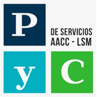
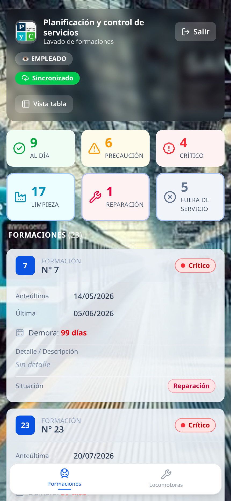
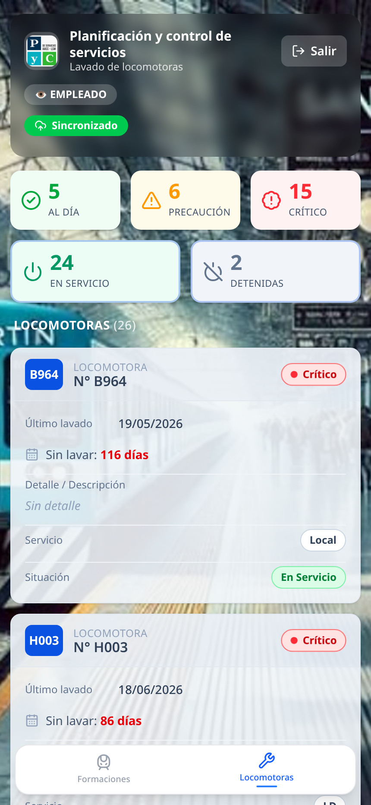
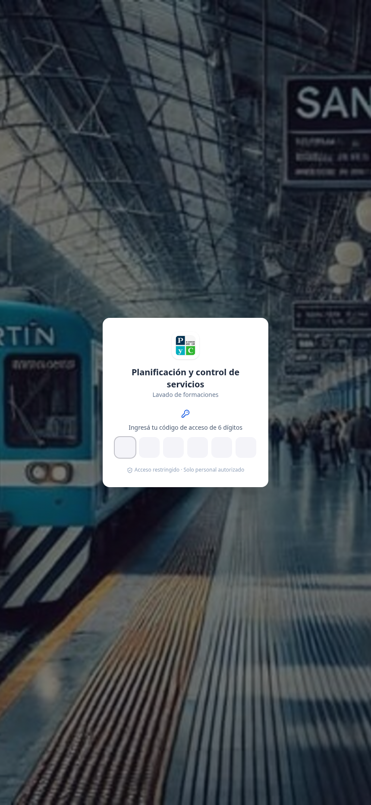

Planificación y control de servicios
Lavado de formaciones y locomotoras · React + Vite · InsForge
trenes-app-kappa.vercel.appControl del lavado de cada formación: cuándo entró, cuántos días lleva y en qué situación está.

Seguimiento de los días sin lavar de cada locomotora, con su propio semáforo de criticidad.

Roles claros para que cada uno vea lo necesario, con datos sincronizados entre dispositivos.

Planificación y control de servicios — lavado de formaciones y locomotoras
trenes-app-kappa.vercel.app